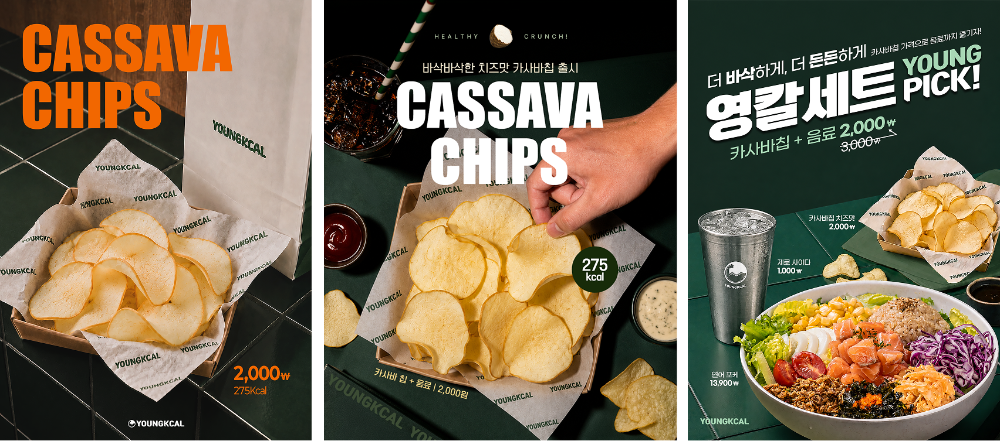
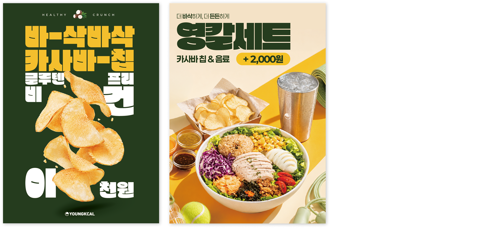

더 바삭하게, 더 든든하게
카사바칩
Design Concept
영칼로리포케의 첫 사이드 메뉴인 카사바칩 포스터를 기획했습니다.
첫 번째 포스터는 카사바칩을 화면 중심에 크게 배치해 제품 자체에
집중했으며, 오렌지 컬러의 타이포그래피로
경쾌하고 강한 인상을 더했습니다.
두 번째
포스터는 칩을 집어 드는 순간과 음료와 소스를 배치해
실제 먹는 장면을 연상시키고, 카사바칩의 바삭한
식감을 강조했습니다.
세 번째 포스터는 포케와 카사바칩, 음료를
세트로 즐기는 방식을 직관적으로 보여주었습니다.
Process
실제 제품 촬영 없이 카사바칩의 형태와 질감, 패키지, 테이블 공간과
소품을 모두 AI로 제작했습니다.
각 포스터의 목적에 맞춰
이미지를 제작한 뒤 합성했습니다.
Problem
① 어둡고 무거운 비주얼 톤
다크 그린과
낮은 조도의 이미지가 전체적으로 어둡고 무거운 분위기를
형성했습니다.
이로 인해 식품 광고에서 중요한 신선함과 밝고
건강한 이미지가 충분히 전달되지 못했습니다.
② AI 이미지의 부자연스러운 표현
AI로 제작한 이미지에서 나타나는 부자연스러운 질감과
조명, 합성의 이질감으로 인해 실제 제품의 생생한 매력이 충분히
드러나지 않았습니다.
특히 음식의 사실적인 표현이 중요한
F&B 광고에서 시각적 완성도를 높일 필요가 있었습니다.
③ 불명확한 정보 위계
메인 카피, 제품명, 가격, 할인 정보 등 너무 많은 텍스트가
한 화면에 배치되면서 시선이 분산되었습니다.
강조 요소가
많아 소비자가 가장 먼저 확인해야 할 핵심 혜택이 직관적으로
전달되지 못했습니다.

제품의 매력을 선명하게, 메시지는 직관적으로
기존 디자인의 어두운 분위기와 부자연스러운 이미지 표현, 복잡한 정보 구성에서 발생하는 문제점을 개선했습니다.
카사바칩 포스터는 역동적인 제품 이미지와 대담한 타이포그래피를 활용해 바삭한 식감을 시각화했으며, 영칼세트 포스터는 밝고 건강한 분위기와 명확한 정보 위계를 통해 제품의 매력과 가격 혜택을 직관적으로 전달하도록 리뉴얼했습니다.
Design concept ①
제품을 단순히 보여주는 방식에서 벗어나, 카사바 칩의 핵심 매력인
바삭한 식감을시각적으로 전달할
수 있도록 이미지를 제작했습니다.
공중에 떠있는 카사바칩의 이미지와 굵은 타이포그래피를 활용하여
경쾌하고 역동적인 분위기를 연출했습니다.
제품의 특징인
“글루텐 프리”, “비건”, “바삭함”이라는 핵심 메시지를
강조했습니다.
텍스트와 이미지를 중첩하여 평면적인 레이아웃에
리듬감을 더했습니다.
브랜드의 다크 그린을 배경 컬러로 사용하고, 카사바칩의 치즈맛을 연상시키는 옐로컬러와 화이트 컬러를 배치해 강렬한 대비를 주어 주목도를 높였습니다.
Design concept ②
기존 세트 메뉴 포스터의 어두운 분위기에서 벗어나 밝은 컬러를 통해 건강하고 활기찬 이미지를 전달하고자 했습니다.
기존의 복잡한 문구를 간소화하고, 메인 타이틀과 가격 정보를 강조하여 소비자가 세트 구성과 가격을 직관적으로 이해할 수 있도록 수정했습니다.
테니스공과 운동 소품 등을 활용해 영칼로리포케만의 활동적인 라이프스타일을 표현했습니다.
